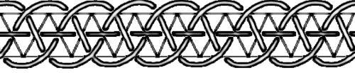

Producing graphs is easy, any child can do that and actually does when she draws the standard man shape:
Producing graphs is easy, any child can do that and actually does when she draws the standard man shape:
But as you can
 see, the resulting knot is not tremendously attractive.
see, the resulting knot is not tremendously attractive.
So the question arises how to design nice looking knots. The easiest way when you begin is to rely on lattices. There are plenty of lattices and more generally tilings or tesselations. A wonderful website is devoted to this fascinating subject. The best known are the square, the triangular and the hexagonal lattices. I won’t present to you the square lattice, everybody knows this one. I guess you can draw a triangular lattice. Then you can draw an hexagonal one as well since you obtain an hexagonal lattice by erasing half of the edges of a triangular lattice. They are related in a deeper way because the dual lattice of a hexagonal lattice is a triangular lattice. We will study this mathematical notion further on and see that it is a usefull one.
{kind=link}
But the truth is, if you have only lattices, then you will produce only boring braids like that one:

You’ve got to disturbe that a bit to get something pleasant. To do so, you have to prevent some crossings to occur.
| You can do that in two ways: |
 |
becomes |
|
|
or |
 |
You now have three types of edges, the usual ones where the crossings occur and the two other new forms where the threads don’t cross but bounce back.


You encode this information into your graph, by slashing the edge for the first way of preventing the crossing and by thickening it for the second way. To be complete in fact, one would need also the other way of crossing, which is obtained by inversing the over and under threads; we will code this fourth edge by a dotted line.
In the maze way of thinking about all that, these walls bar the door, whether splitting it in two or closing it completely:


The easiest way is to begin with ladders of squares or triangles, with a few walls placed harmoniously. The following exercise is not supposed to look nice as is but to give you patterns, of length two or three, that you can repeat along a ladder. Be careful that some edges are thicker than others! Be sure to differentiate them.

You can have a look at the answers or move on to the next topic: extraction.
previous